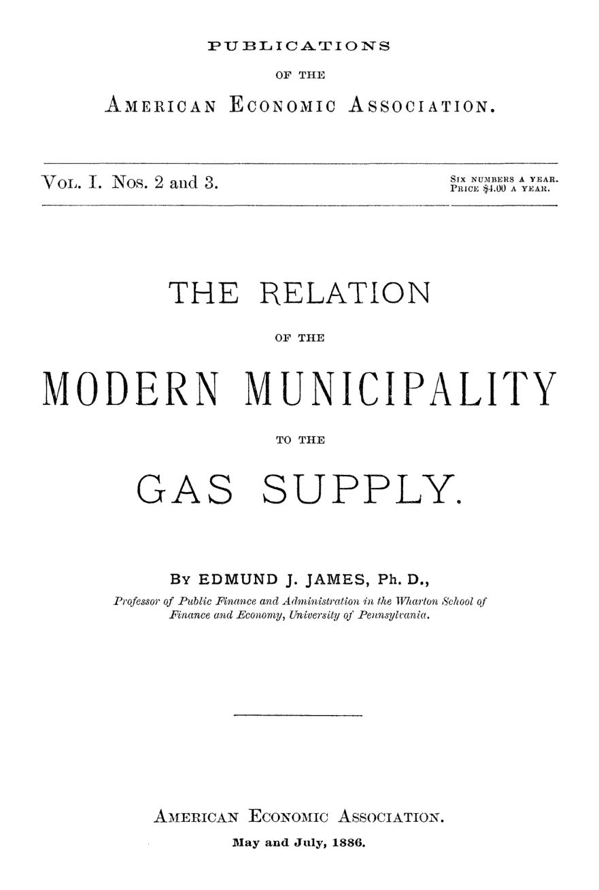

Gás: público ou privado? A pergunta de 1886
Leitura: 7 min
Seis canos sob a mesma rua, capital aguado e gás caro: em 1886, Edmund J. James argumentou que o gás era monopólio inevitável e que a escolha real era entre monopólio privado e público.


Em Londres, em meados do século XIX, a Oxford Street era abastecida por seis usinas de gás diferentes. Sob algumas ruas corriam seis tubulações paralelas. Havia casas com três ou mais ligações, e consumidores espertos diziam ao fiscal de cada companhia que tinham contratado a rival. Assim, não pagavam a nenhuma. A cena, relatada pelo engenheiro William Richards, é a peça de abertura de um dos primeiros estudos publicados pela American Economic Association.
O autor, Edmund J. James, professor de finanças públicas da Wharton School, na Universidade da Pensilvânia, enfrentava uma questão que as cidades americanas debatiam em 1886: quem deve fornecer o gás que ilumina as ruas, cozinha as refeições e move pequenas máquinas? Sua resposta desloca o debate. A escolha, diz ele, não é entre monopólio e concorrência, mas entre dois tipos de monopólio.
Por que o gás não admite concorrência?
James aponta três razões técnicas. O negócio exige capital grande, fora do alcance de pequenos empreendedores. O gás precisa ser produzido perto de onde é consumido; não se engarrafa e despacha, como um par de sapatos. E a distribuição obriga a abrir as ruas para assentar e consertar canos, coisa que uma cidade tolera de uma empresa, não de seis.
O argumento se apoia numa classificação de H. C. Adams, que separa indústrias de retornos constantes, decrescentes e crescentes. No terceiro grupo, cada acréscimo de capital rende mais que proporcionalmente, e a empresa já instalada sempre atende a demanda nova mais barato que uma entrante. O gás, conclui James, pertence a essa classe. Hoje se diria: monopólio natural.
A experiência inglesa confirmava a teoria. As companhias londrinas acabaram por dividir a cidade em distritos, unificar preços e fundir-se: eram cerca de 13 em 1853 e apenas três em 1883. A concorrência, ali, não baixou o preço; apenas deixou um estoque de canos inúteis sobre o qual o público continuava pagando dividendos.
O que acontece quando se insiste na concorrência?
Nos Estados Unidos, o padrão se repetia. James transcreve o parecer de uma comissão do Congresso, ao negar a uma nova companhia o direito de assentar canos em Washington, que lista 20 cidades americanas onde a entrada de rivais terminou em fusão, de Nova Orleans a Chicago e Baltimore.
“Companhias de gás de oposição não são benéficas, mas prejudiciais.” (opposition gas companies are not beneficial, but that they are injurious)
O roteiro é sempre o mesmo: guerra de tarifas, gás barato por algum tempo, depois compra, fusão ou divisão de território. Ao final, o consumidor paga duas redes onde bastava uma. Em Brooklyn, a Mutual Gas-Light Company prometeu não cobrar mais de US$ 2,00 por mil pés cúbicos; ao obter o controle do mercado, passou a cobrar US$ 2,50.
É o mecanismo do capital aguado. James o ilustra com uma cidade hipotética: uma companhia nasce com US$ 150 mil, reconstrói a usina mais de uma vez e, sem nunca baixar o capital já amortizado, acaba registrando US$ 1 milhão. A tarifa passa a remunerar instalações que já não existem. Numa indústria competitiva, lembra ele, o fabricante de tecidos teria de dar baixa na fábrica velha; no monopólio, ninguém o obriga.
A gestão municipal funciona?
James não esconde o caso incômodo. Filadélfia, sua própria cidade, operava a usina por meio de um conselho de curadores eleito pela Câmara e, na prática, sem prestar contas. Virou máquina política. Mesmo assim, argumenta, a cidade acumulou um patrimônio de pelo menos US$ 15 milhões e pagava gás mais barato que Nova York. O fracasso era do desenho institucional, não da propriedade pública.
Cidades menores davam resultados mais limpos. Em Wheeling, na Virgínia Ocidental, a usina municipal vendia a 90 centavos por mil pés cúbicos, e um funcionário local escrevia que a política nunca entrara na sua gestão.
No exterior, a tendência era nítida. Na Alemanha, as usinas públicas eram 66 de 266 em 1860 e 290 de 600 em 1883. Na Inglaterra, cerca de 160 eram municipais, e cidades pagavam até quase quatro vezes o valor de face das ações para comprar as companhias privadas. Em Nottingham, a prefeitura reduziu o preço e viu o consumo quase dobrar em oito anos.
“A pior forma de despotismo a que uma comunidade pode estar sujeita.” (the very worst form of despotism that a community can be subject to)
A frase é de Arthur Silverthorne, especialista inglês em gás, sobre os monopólios privados, numa carta enviada a James.
E a objeção da corrupção?
Era o argumento mais forte nos Estados Unidos: entregar a usina à prefeitura seria alimentar o clientelismo. James responde que a companhia privada não elimina a corrupção, apenas muda sua forma. Em vez de empregar cabos eleitorais, compra vereadores e deputados no atacado, como mostraram as investigações de uma comissão do Senado de Nova York. Em 1882, uma comissão da Câmara de Richmond chegou à mesma conclusão ao rejeitar a venda da usina municipal.
“Sob a propriedade privada, estamos sujeitos a um senhor cujo jugo não conseguimos sacudir.” (under private ownership we are subject to a master whose rule we cannot shake off)
A proposta de James é administrativa. A usina seria um departamento municipal, com um chefe nomeado pelo prefeito e engenheiros escolhidos por concurso, demissíveis apenas por incapacidade ou negligência, com justificativa escrita enviada à Câmara. Ele reconhece que a melhor regulação privada conhecida, a escala móvel inglesa, funcionava razoavelmente. Mas observa que ela exige fiscalização tão minuciosa que a cidade capaz de fiscalizar seria igualmente capaz de administrar.
Na minha leitura
Na minha leitura, o ponto mais duradouro do texto não é a defesa da estatização, mas o diagnóstico de que a concorrência pode ser a pior política para um setor com redes duplicadas. James percebe algo que a teoria da regulação levaria décadas para formalizar: o problema do monopólio natural não se resolve com mais entrantes, e sim com regras sobre capital, tarifa e informação. Sua escala móvel inglesa já contém a lógica da regulação por incentivos.
O ponto fraco é a confiança no concurso público como antídoto suficiente. A observação de que quem regula bem poderia gerir bem corta nos dois sentidos: quem não consegue fiscalizar uma concessionária dificilmente gerirá bem uma estatal. A questão de 1886 continua sendo menos ‘público ou privado’ e mais ‘com que instituições’.
Glossário
- monopólio natural
- Setor em que uma única empresa atende o mercado a custo menor do que duas ou mais; James usa a expressão “practical monopoly”.
- capital aguado
- Capital declarado acima do custo real dos ativos (watered capital), usado para justificar tarifas e dividendos mais altos.
- escala móvel
- Regra inglesa (sliding scale) que permitia à companhia elevar o dividendo a cada redução do preço do gás.
- retornos crescentes
- Situação em que cada acréscimo de capital e trabalho gera aumento mais que proporcional da produção.
- mil pés cúbicos
- Unidade de venda do gás na época, equivalente a cerca de 28,3 metros cúbicos.
Fontes
- The Relation of the Modern Municipality to the Gas Supply (pp. 7–76). JSTOR · Internet Archive (PDF)
- Sumário da edição no JSTOR: Publications of the American Economic Association, vol. 1, nº 2/3.
Documento em domínio público (EUA, publicado antes de 1931), via JSTOR Early Journal Content e Internet Archive. Resumo e comentário do autor deste site, sem afiliação com a American Economic Association. Encontrou um erro? Escreva: a correção é publicada no próprio texto, com data.
← Nº 1 · Saratoga, 1885: os economistas que recusaram um credo Nº 3 · Os tanoeiros que dispensaram o patrão →